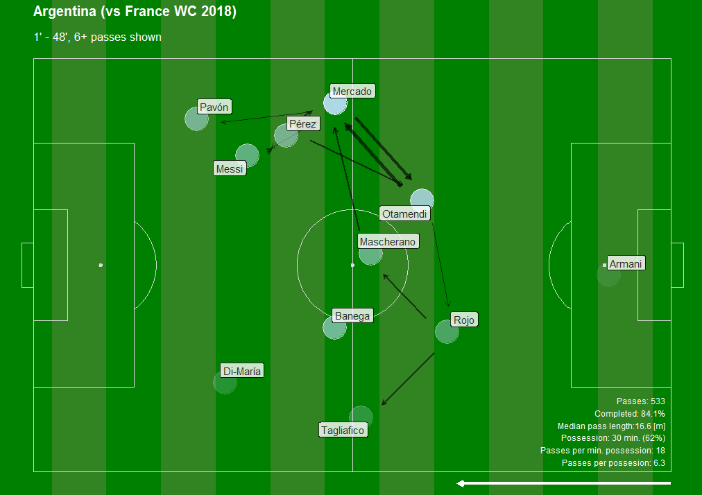
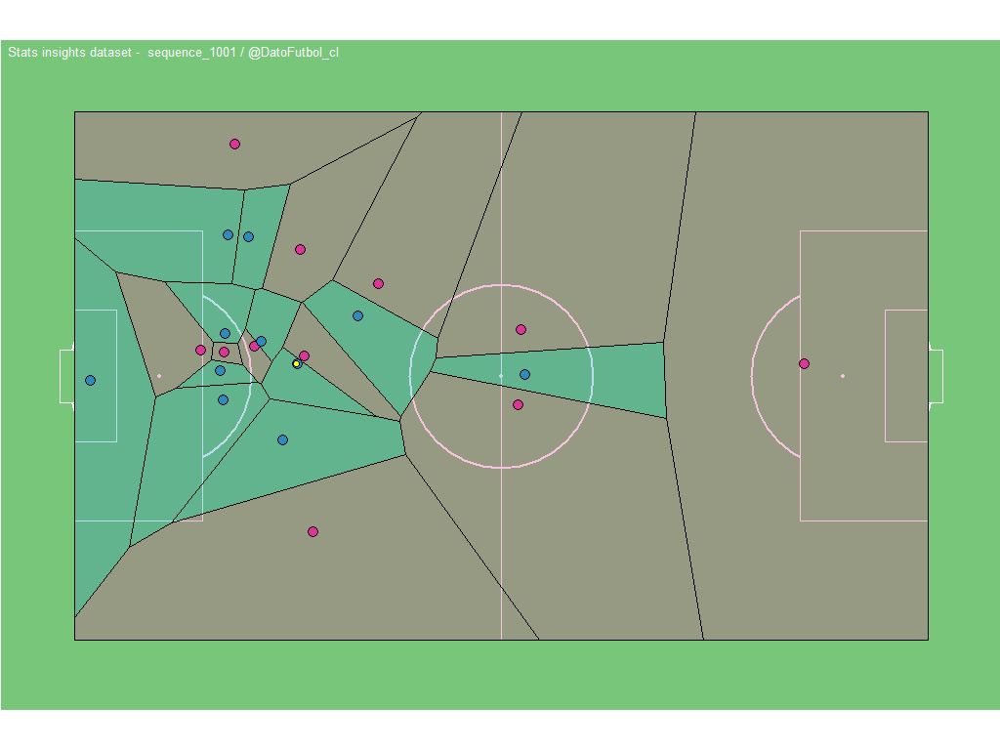

DATO FUTBOL is a personal project that started in 2017 and it is focus on get a deeper knowledge in the field of Soccer (Football) Analytics. This way i’ve been developing different resources related, like this blog, which was created using RStudio, the package blogdown and deploying Shiny apps for some posts.
Another resources here:
- Another articles about using R for Soccer Analytics (Medium):
Examples
Generally, to choose topics for writing depends on available data. So, i propose 3 data categories: A) Historical data, B) Event data & C) Tracking data. Here some examples:
1) Historical data
*Champions ranking

2) Event data
*Shotmap

*Passing Networks


3) Tracking data
Animation with Voronoi diagrams (code in Github):

If you have any request don’t hesitate to contact me by email: